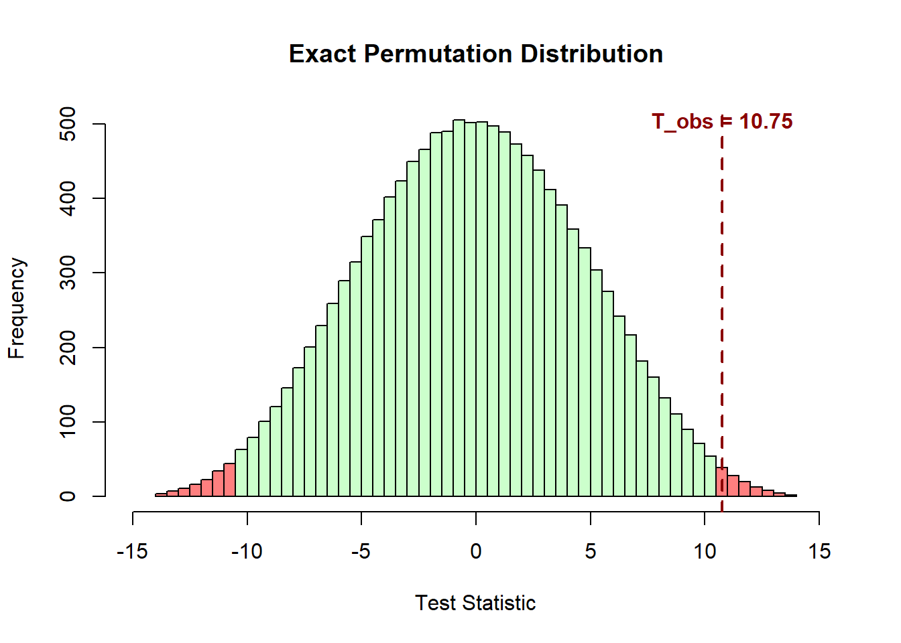

# Data
X1 <- c(66, 57, 81, 62, 61, 60, 73, 53) # (n1=8)
X2 <- c(64, 58, 59, 44, 47, 56, 48, 51) # (n2=8)Two-sample permutation test: How it works
Statistics
Permutation tests approximate the null distribution of a test statistic by repeatedly resampling the data in a way that is consistent with the null hypothesis.
Permutation Tests
Permutation tests, also known as randomization or re-randomization tests, approximate the null distribution of a test statistic by resampling in a manner consistent with the null hypothesis, a concept originating in Fisher’s early work on randomized experiments. They are especially useful when parametric assumptions, such as normality, are questionable or when sample sizes are small.
Two-sample problem
The two-sample permutation test uses this resampling approach to assess whether the locations of two independent groups differ, providing a non-parametric alternative to traditional tests of mean or median differences.
This is achieved by repeatedly permuting the data labels without replacement—so that each permutation is a rearrangement of the original labels—and recalculating the test statistic for each permutation. The resulting p-value is the proportion of permutations that produce a statistic as extreme as—or more extreme than—the observed value.
We now describe this framework in detail, step by step.
Let \(\mathbf{X_1} = \{X_{1i}, i = 1, 2, ..., n_1 \}\) and \(\mathbf{X_2} = \{X_{2i}, i = 1, 2, ..., n_2 \}\) be two sets of independent sample data. The objective is to test whether the data are consistent with the null hypothesis of no difference in locations of the distributions (\(\delta = 0\), where \(\delta\) is known as the treatment effect)
\[H_o: \mathbf{X_1} \stackrel{d}{=} \mathbf{X_2}\]
or with the two-sided alternative (\(\delta \neq 0\))
\[H_1: \mathbf{X_1} \stackrel{d}{\neq} \mathbf{X_2}\]
Step 1: Combine the two datasets
First, we combine the two datasets in one vector as follows:
\[\mathbf{X} = \mathbf{X}_1 \uplus \mathbf{X}_2 = \{X_i, i = 1, \ldots, n\}, \ \ \ n= n_1 + n_2\]
where \(\uplus\) denotes concatenation, so that the two samples are pooled into a single set \(\mathbf{X}\), which is fixed.
Step 2: Create an assignment indicator vector
The assignment vector \(\mathbf{Z}\) indicates which group each participant belongs to:
\[\mathbf{Z} = \{{Z_i, i = 1, \ldots, n}\}\]
where:
\[ Z_i = \begin{cases} 1, & \text{if participant } i \text{ is assigned to } \mathbf{X}_1,\\ 0, & \text{if participant } i \text{ is assigned to } \mathbf{X}_2. \end{cases} \]
Properties of \(\mathbf{Z}\):
Each \(Z_i\) is binary: \(Z_i \in \{0, 1\}\)
The sum \(\sum_{i=1}^{n} Z_i = n_1\) (counts how many are in Group 1)
The sum \(\sum_{i=1}^{n} (1 - Z_i) = n_2\) (counts how many are in Group 2)
Therefore, the observed assignment indicator is:
\[ \mathbf{Z^{\text{obs}}} = (\underbrace{1, 1, \ldots, 1}_{n_1 \text{ times}}, \underbrace{0, 0, \ldots, 0}_{n_2 \text{ times}}) \]
Step 3: Define the test statistic (e.g., difference in means)
The test statistic is a function of both \(\mathbf{Z}\) and \(\mathbf{X}\):
\[T (\mathbf{Z}, \mathbf{X}) = \mathbf{\bar{X}_1} - \mathbf{\bar{X}_2}\]
where the group means are
\[\mathbf{\bar{X}_1} = \frac{1}{n_1} \sum_{i=1}^{n} Z_i X_i = \frac{1}{n_1} \sum_{i: Z_i = 1} X_i\]
\[\mathbf{\bar{X}_2} = \frac{1}{n_2} \sum_{i=1}^{n} (1 - Z_i) X_i = \frac{1}{n_2} \sum_{i: Z_i = 0} X_i\]
Therefore, the observed test statistic is:
\[T^{obs}=T(\mathbf{Z^{obs}},\mathbf{X})\]
Step 4: Generate the permutation distribution
Under the null hypothesis \(H_o\), any permutation of \(\mathbf{Z}\) is just as likely to have produced the observed data \(\mathbf{X}\) as the actual assignment \(\mathbf{Z^{obs}}\). Relying on this assumption, we randomly permute (suffle) the group labels while keeping the data values fixed. For each permutation, we recalculate the test statistic \(T\).
If we consider all possible orderings of n observations:
\[n! = n \times (n-1) \times (n-2) \times \cdots \times 2 \times 1\]
then, for example, if \(n=16\), the total number of orderings (i.e., permutations of all 16 items) is enormous:
\[16! \approx 2.09 \times 10^{13}\]
However, for a test statistic based on group means, we are only interested in which observations belong to which group—not the order of observations within each group. The mean of a set of numbers remains the same no matter the order in which the numbers are added.
In this case, we only need to determine which observations go into the first group; the remaining observations automatically belong to the second group. The number of such distinct assignments (cardinality) is :
\[M = \ ^nC_{n_1} = \binom{n}{n_1} = \frac{n!}{n_1! \, (n - n_1)!}\] This represents choosing \(n_1\) observations out of \(n\) to be in Group 1. The remaining \(n_2 = n - n_1\) observations then automatically form Group 2.
A simple example
Let’s consider a total of \(n=4\) observations that are to be split into two groups: Group A with \(n_1=2\) observations and Group B with \(n_2=2\) observations. The pooled data set, \(\mathbf{X}\), is fixed as the set of values \(\{a_1, a_2, b_1, b_2\}\).
Assuming the specific numerical observations are \(\{1, 2, 3, 4\}\), the possible permutations for splitting this data set into two groups of size two are:
- \(A = \{1, 2\} | B = \{3, 4\}\)
- \(A = \{1, 3\} | B = \{2, 4\}\)
- \(A = \{1, 4\} | B = \{2, 3\}\)
- \(A = \{2, 3\} | B = \{1, 4\}\)
- \(A = \{2, 4\} | B = \{1, 3\}\)
- \(A = \{3, 4\} | B = \{1, 2\}\)
\[M = \ ^4C_2 = \binom{4}{2} = \frac{4!}{2!(4-2)!} = \frac{4 \times 3 \times 2 \times 1}{(2 \times 1)(2 \times 1)} = \frac{24}{4} = 6\]
The set of all possible assignment vectors:
\[\Omega = \Big\{ \mathbf{Z}^{(m)} : \sum_{i=1}^{n} Z_i^{(m)} = n_1, \ Z_i^{(m)} \in \{0,1\}, \ m = 1, \dots, M \Big\}\] For each \(\mathbf{Z}^{(m)} \in \Omega\), we compute:
\[T^{(m)} = T(\mathbf{Z}^{(m)}, \mathbf{X})\]
This gives us the exact permutation distribution:
\[\mathcal{T} = \{ T^{(1)}, T^{(2)}, \dots, T^{(M)} \}\]
Step 5: Calculate the p-value
For a two-sided exact p-value:
\[ p = \begin{cases} \displaystyle \frac{1}{M} \sum_{m=1}^{M} \Big[ \mathbf{I}\!\left(T^{(m)} \ge T^{\text{obs}}\right) + \mathbf{I}\!\left(T^{(m)} \le -T^{\text{obs}}\right) \Big], & if \ \ T^{\text{obs}} > 0, \\[1.2em] \displaystyle \frac{1}{M} \sum_{m=1}^{M} \Big[ \mathbf{I}\!\left(T^{(m)} \le T^{\text{obs}}\right) + \mathbf{I}\!\left(T^{(m)} \ge -T^{\text{obs}}\right) \Big], & if \ \ T^{\text{obs}} < 0. \end{cases} \]
or more compactly
\[ p = \frac{1}{M} \sum_{m=1}^{M} \mathbf{I}\!\left( \left|T^{(m)}\right| \ge \left|T^{\text{obs}}\right| \right) \]
where the indicator function \(\mathbf{I}(\text{condition}) = \begin{cases} 1, & \text{if condition is true},\\ 0, & \text{otherwise}. \end{cases}\)
Monte Carlo simulation
When \(M\) is large (computationally unfeasible to enumerate all permutations), we use Monte Carlo simulation. In this case, we generate random permutation \(Z^{(b)}\) and compute the test statistic on the permuted labels \(T^{(b)} = T(\mathbf{Z}^{(b)}, \mathbf{X}), \ where \ b = 1, \dots, B\) and \(B\) is the number of Monte Carlo permutations. This creates the approximate permutation distribution \(\mathcal{T_{aprox}} = \{T^{(1)}, T^{(2)}, \ldots, T^{(B)}\}\) and the p-value is calculated as:
\[ \hat{p}_{\text{MC}} = \frac{1}{B} \sum_{b=1}^{B} \mathbf{I}\!\left( \left|T^{(b)}\right| \ge \left|T^{\text{obs}}\right| \right) \]
Numerical example: application of the framework in R
Let the sample data
\[\mathbf{X}_1 = \{66, 57, 81, 62, 61, 60, 73, 53\} \quad (n_1=8)\]
\[\mathbf{X}_2 = \{64, 58, 59, 44, 47, 56, 48, 51\} \quad (n_2=8)\]
Step 1: Combine the two datasets
Following the permutation test procedure, the two samples are pooled into a single vector \(\mathbf{X}\) of length \(n=16\):\[\mathbf{X} = \mathbf{X}_1 \uplus \mathbf{X}_2 = \{66, 57, 81, 62, 61, 60, 73, 53, 64, 58, 59, 44, 47, 56, 48, 51\}\]
n1 <- length(X1)
n2 <- length(X2)
n <- n1 + n2
X <- c(X1, X2)
X [1] 66 57 81 62 61 60 73 53 64 58 59 44 47 56 48 51
Step 2: Create the observed assignment vector
The observed assignment vector is:
\[ \mathbf{Z^{\text{obs}}} = (\underbrace{1, 1, 1, 1, 1, 1, 1, 1}_{8 \text{ times}}, \underbrace{0, 0, 0, 0, 0, 0, 0, 0}_{8 \text{ times}}) \]
Therefore:
| \(\mathbf{X}\) | 66 | 57 | 81 | 62 | 61 | 60 | 73 | 53 | 64 | 58 | 59 | 44 | 47 | 56 | 48 | 51 |
| \(\mathbf{Z^{\text{obs}}}\) | 1 | 1 | 1 | 1 | 1 | 1 | 1 | 1 | 0 | 0 | 0 | 0 | 0 | 0 | 0 | 0 |
Permutation \(m=1\) (Original Assignment)
# Indices for Group 1 (X1) in the pooled vector X
perm1 <- c(1, 2, 3, 4, 5, 6, 7, 8)
perm1 [1] 1 2 3 4 5 6 7 8# Initialize the assignment vector Z to all zeros
Z_1 <- numeric(16)
Z_1 [1] 0 0 0 0 0 0 0 0 0 0 0 0 0 0 0 0# Assign 1s to the indices corresponding to Group 1
Z_1[perm1] <- 1 # Put 1s at positions 1-8
Z_1 [1] 1 1 1 1 1 1 1 1 0 0 0 0 0 0 0 0Z_obs <- Z_1
Z_obs [1] 1 1 1 1 1 1 1 1 0 0 0 0 0 0 0 0
Step 3: Calculate the observed test statistic
The \(T^{obs}\) statistic is:
\[T^{obs} = T(\mathbf{Z}^{(obs)}, \mathbf{X})\]
X1_mean <- mean(X1)
X2_mean <- mean(X2)
T_obs <- X1_mean - X2_mean
T_obs[1] 10.75
Step 4: Generate the permutation distribution
Next, the following two permutations are presented (i.e., m = 2 and m = 3).
- For permutation \(m=2\) (Different Assignment; the last element is changed to 9)
# Indices for Group 1 (X1) in the pooled vector X
perm2 <- c(1, 2, 3, 4, 5, 6, 7, 9) # now last element is 9
perm2 [1] 1 2 3 4 5 6 7 9# Initialize the assignment vector Z to all zeros
Z_2 <- numeric(16)
Z_2 [1] 0 0 0 0 0 0 0 0 0 0 0 0 0 0 0 0# Assign 1s to the indices corresponding to Group 1
Z_2[perm2] <- 1 # Put 1s at positions 1-7 and 9
Z_2 [1] 1 1 1 1 1 1 1 0 1 0 0 0 0 0 0 0X1_perm2 <- X[Z_2 == 1]
X1_perm2[1] 66 57 81 62 61 60 73 64X2_perm2 <- X[Z_2 == 0]
X2_perm2[1] 53 58 59 44 47 56 48 51The T statistic is:
\[T^{(2)} = T(\mathbf{Z}^{(2)}, \mathbf{X})\]
T_perm2 <- mean(X1_perm2) - mean(X2_perm2)
T_perm2[1] 13.5
- Similarly, for permutation \(m=3\) (Different Assignment; the last element is changed to 10)
# Indices for Group 1 (X1) in the pooled vector X
perm3 <- c(1, 2, 3, 4, 5, 6, 7, 10) # now the last element is 10
perm3 [1] 1 2 3 4 5 6 7 10# Initialize the assignment vector Z to all zeros
Z_3 <- numeric(16)
Z_3 [1] 0 0 0 0 0 0 0 0 0 0 0 0 0 0 0 0# Assign 1s to the indices corresponding to Group 1
Z_3[perm3] <- 1 # Put 1s at positions 1-7 and 10
Z_3 [1] 1 1 1 1 1 1 1 0 0 1 0 0 0 0 0 0X1_perm3 <- X[Z_3 == 1]
X1_perm3[1] 66 57 81 62 61 60 73 58X2_perm3 <- X[Z_3 == 0]
X2_perm3[1] 53 64 59 44 47 56 48 51The T statistic is:
\[T^{(3)} = T(\mathbf{Z}^{(3)}, \mathbf{X})\]
T_perm3 <- mean(X1_perm3) - mean(X2_perm3)
T_perm3[1] 12
Now, the total number of possible permutations is computed as:
M <- choose(n, n1)
M[1] 12870In this case, it is feasible to generate all possible permutations:
# generate all possible combinations of choosing n1 elements from the set X
library(combinat)
all_perms <- combn(1:n, n1)The first three permutations, as found previously, are:
all_perms[, c(1:3)] [,1] [,2] [,3]
[1,] 1 1 1
[2,] 2 2 2
[3,] 3 3 3
[4,] 4 4 4
[5,] 5 5 5
[6,] 6 6 6
[7,] 7 7 7
[8,] 8 9 10
The collection of all possible T statistics—one for each possible way to divide the \(n\) observations into groups of size \(n_1\), \(\mathcal{T} = \{ T^{(1)}, T^{(2)}, \dots, T^{(12870)} \}\), can be generated using the following loop:
T_perm <- numeric(M)
for (m in 1:M) {
# Create assignment vector for this permutation
Z_m <- numeric(n)
Z_m[all_perms[, m]] <- 1
# Calculate test statistic for this permutation
X1_perm <- X[Z_m == 1]
X2_perm <- X[Z_m == 0]
T_perm[m] <- mean(X1_perm) - mean(X2_perm)
}We can print the first three T static values as follows (we have computed them previously):
T_perm[1:3][1] 10.75 13.50 12.00
Finally, we create the histogram of the computed T statistics that is the exact permutation distribution. Each bar represents the number of times a particular range of \(T\) values occurs across all possible permutations of the data.
hist(T_perm, breaks = 50, col = rgb(0.8, 1, 0.8),
main = "Exact Permutation Distribution",
xlab = "Test Statistic T", xlim = c(-15, 15))
Step 5: Calculate the p-value
Since the \(T^{obs} = 10.75 > 0\):
p_value_exact <- (sum(T_perm >= T_obs) + sum(T_perm <= -T_obs)) / M
p_value_exact[1] 0.01787102
The extreme values of T statistic, which are unlikely under the null hypothesis, are highlighted in a light red color. The upper tail corresponds to \(T \ge T^{\text{obs}}\), and the lower tail corresponds to \(T \le -T^{\text{obs}}\).
# Histogram of permutation distribution with colored tails
h <- hist(T_perm, breaks = 50, plot = FALSE)
colors <- ifelse(h$mids >= T_obs | h$mids <= -T_obs,
rgb(1, 0, 0, 0.5), rgb(0.8, 1, 0.8))
plot(h, col = colors, main = "Exact Permutation Distribution",
xlab = "Test Statistic T", xlim = c(-15, 15))
abline(v = T_obs, col = "darkred", lwd = 2, lty = 2)
text(T_obs, max(h$counts) * 0.95,
bquote(T^{obs} == .(round(T_obs, 2))),
col = "darkred", cex = 1, font = 2, adj = c(0.5, 0))
or equivalently
p_value_exact <- mean(abs(T_perm) >= abs(T_obs))
p_value_exact[1] 0.01787102The corresponding p-value is \(p = 0.0179\). Since \(p < 0.05\), the observed test statistic lies in the extreme tails of the permutation distribution, indicating that the observed grouping is unusual under the null hypothesis. Therefore, we reject the null hypothesis at the 5% significance level, suggesting a statistically significant difference between the groups.
The result can also be confirmed by using the oneway_test() function from the coin R package:
coin::oneway_test(X~factor(Z_obs), distribution="exact")
Exact Two-Sample Fisher-Pitman Permutation Test
data: X by factor(Z_obs) (0, 1)
Z = -2.2489, p-value = 0.01787
alternative hypothesis: true mu is not equal to 0
Comparison to the classic two-sample T-test
Let’s formally apply the two-sample t-test to compare its p-value with that of the permutation test.
t.test(X1, X2)
Welch Two Sample t-test
data: X1 and X2
t = 2.6686, df = 13.108, p-value = 0.0192
alternative hypothesis: true difference in means is not equal to 0
95 percent confidence interval:
2.054571 19.445429
sample estimates:
mean of x mean of y
64.125 53.375 In this example, the results are highly consistent. Both the exact Permutation Test (\(p = 0.0179\)) and the two-sample T-test (\(p = 0.0192\)) yield close p-values.